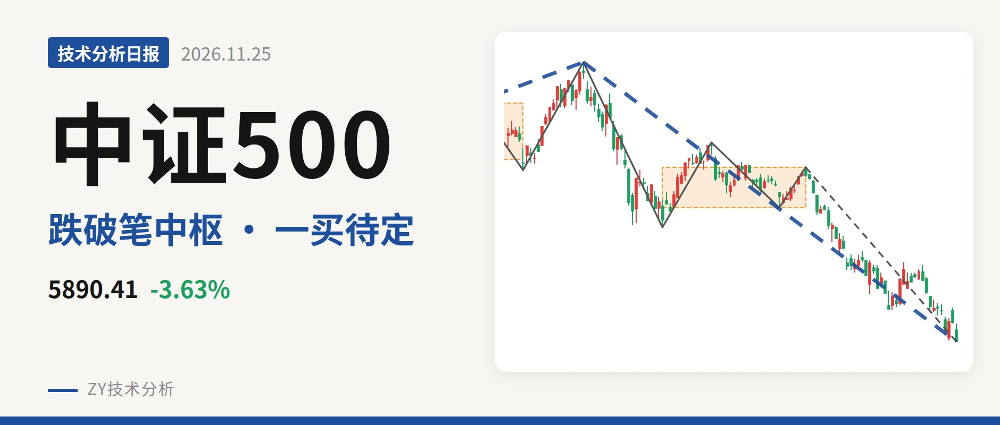
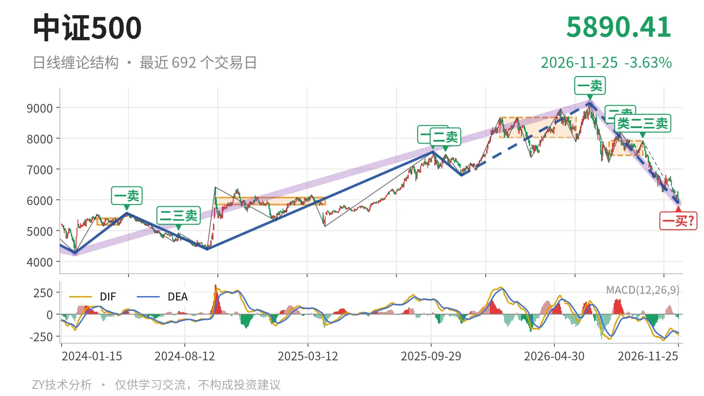

中证500｜一买暂定5890，跌入大中枢区间

最近日线中枢 7451.12—7922.62点，收盘位于中枢之下
一句话：下跌段未完，暂定一买，价格跌入大中枢下沿区域
📉 走势结构：下跌段还在延续
日线下跌段自7月1日的9147.56点起步，至今跌35.6%，没有结束。这段下跌内含5笔，最新一笔从9月22日的7922.62点下行，41根K线跌25.7%。更大级别上，2024年2月5日以来的上涨走势（4281.24→9147.56点）尚未被破坏，当前下跌仍在其内部运行。但价格已跌回2022年4月27日至2023年8月4日日线线段中枢（5594.30—6263.16点）内部，调整深度已触及大级别中枢区域。

📊 中枢与位置：中枢下移，价格跌破最近笔中枢
最近完成的日线笔中枢为7月30日至9月22日（7451.12—7922.62点），中轴7686.87点。最新收盘5890.41点位于该中枢下方，低于下沿20.9%。前一个笔中枢为1月26日至6月8日（8014.66—8671.35点），中枢明显下移。价格当前跌入大级别线段中枢（5594.30—6263.16点）内部，靠近下沿区域，处于大中枢与笔中枢之间的真空地带。
⚡ 买卖点：卖点逐级走低，一买暂定
7月1日的一卖9147.56点、8月18日的二卖8211.31点、9月22日的类二三卖7922.62点，一个比一个低。11月25日暂定的一买5890.41点，所在下跌笔还在延续，会随这一笔的延续而变化。线段级别上，2025年11月24日的三买6797.50点已被跌穿，该三买对应的上行结构失效。

🔍 背驰：绿柱面积缩小，DIF仍创新低
比较7月1日至7月30日下跌笔与9月22日至今的下跌笔：前者绿柱面积2687，DIF低点-285.2；后者绿柱面积1978，DIF低点-298.6。价格创出新低（5890.41点低于7221.95点），绿柱面积缩小，呈现新低不新弱的迹象。但DIF低点-298.6低于前笔的-285.2，力度未完全收敛。且当前下跌笔没有结束，绿柱面积仍可能继续放大，背驰结论需等待笔走完才能确认。
🎯 关键位置：反抽能否回到7451点上方
7451点是最近笔中枢的下沿，反抽若回不到7451点上方，结构上构成三卖，下跌段将延续。下方5594点为大级别线段中枢下沿，若跌破5594点，更大级别的上涨走势将面临破坏风险。当前价格在大中枢内部、笔中枢下方，结构偏弱——中枢下移叠加卖点逐级走低，虽然绿柱面积有收窄迹象，但DIF仍在零轴下方且创新低，反弹力度尚不具备反转条件。
⚠️ 本文为基于公开行情数据的缠论技术结构记录，由程序自动计算并生成，仅供学习交流，不构成任何投资建议。市场有风险，投资需谨慎。